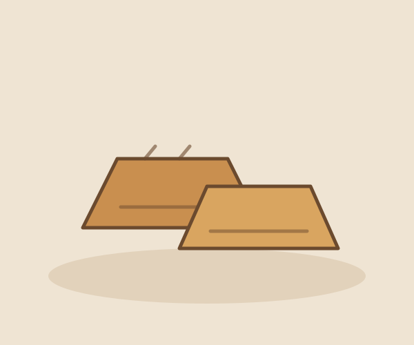

淺焙 / 水洗
淺焙 / 水洗01 / 03
四次嚴選 每週鮮烘SCROLL TO DISCOVER
01 / ORIGIN單一產區，保留風土
02 / SELECTION人工手選 × 光學複選
03 / ROASTING每週鮮烘，陪伴日常
A GOOD CUP STARTS WITH A GOOD BEAN
好喝，從把豆子挑好開始。
我們喜歡咖啡裡細緻的香氣，也在意最後一口的乾淨。
從產地、挑選到烘焙，讓風味有自己的樣子，讓日常多一點從容。
OUR COFFEE COLLECTION
找到你的那一杯。
3 款精選咖啡


這次沒有找到符合的精選咖啡。
前往完整選購頁 ↗
FROM BEAN TO YOUR DAILY RITUAL
香氣有來處，
好咖啡有堅持。
挑豆，留下純淨的基底。烘焙，讓每個產區的香氣慢慢展開。我們在意的，是入口時的清透，也是放下杯子後仍想念的甘甜。
走近我們的咖啡日常精選產區細緻挑豆每週鮮烘
THE CARE BEHIND A CLEAN CUP
每一顆用心，
都在這一杯裡。
四次挑豆，是乾淨風味的起點。
從產地初選到烘焙後檢視，把細節留給我們，把好喝留給你。

MAKE IT YOUR EVERYDAY RITUAL
把一杯咖啡，
變成喜歡的日常。
選一款喜歡的豆，留一點時間給自己。
從第一口的香氣，慢慢喝到杯底的餘韻。
- 01
從喜歡的風味開始
花果、焦糖或可可？先找到讓你心動的味道。
- 02
沖出自己的節奏
參考商品的手沖建議，再依口味調整濃淡。
- 03
慢慢感受風味變化
從溫熱到冷卻，留意香氣、甜感與口感的層次。

第一次選豆，該從哪一款開始？
喜歡花果香與明亮酸質，可以從耶加雪菲開始；偏好溫和甜感，可以看看哥倫比亞薇拉；喜歡堅果與可可的圓潤口感，則可選安堤瓜花神。風味描述是選豆方向，也會隨沖煮方式而改變。
「乾淨」的咖啡，是什麼意思？
我們用「乾淨」描述杯中的風味：讓咖啡本身的香氣、甜感與口感清楚呈現，減少雜澀的干擾。挑豆是其中一環，烘焙與沖煮同樣重要。
為什麼需要人工與機器一起挑豆？
機器協助篩選色澤與外觀差異，人工則補上細緻的檢視。從產地到熟豆分階段挑選，讓不同環節各自把關。可以在上方的挑豆工藝區查看四道工序。
收到咖啡豆後，如何保存？
取用後把袋口密封，放在陰涼乾燥、避免陽光直射與高溫的地方。依包裝上的烘焙日期與保存資訊安排品飲，也留意開封後香氣的變化。

HANDMADE TREATS
配一口，剛剛好的甜。
手作小點，與咖啡最好的相遇。
看看點心COFFEE SUBSCRIPTION
每個月，都有一場新的相遇。
定期收到當季新鮮烘焙咖啡，可隨時暫停或取消。
查看方案YOUR NEXT GOOD CUP